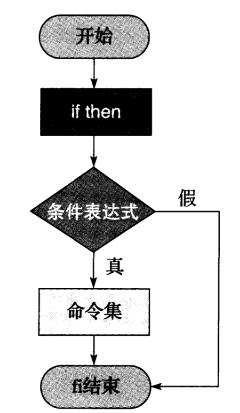
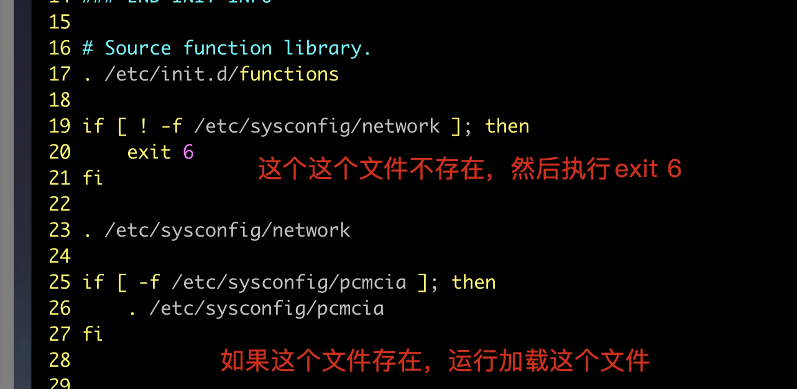
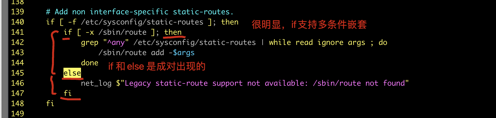
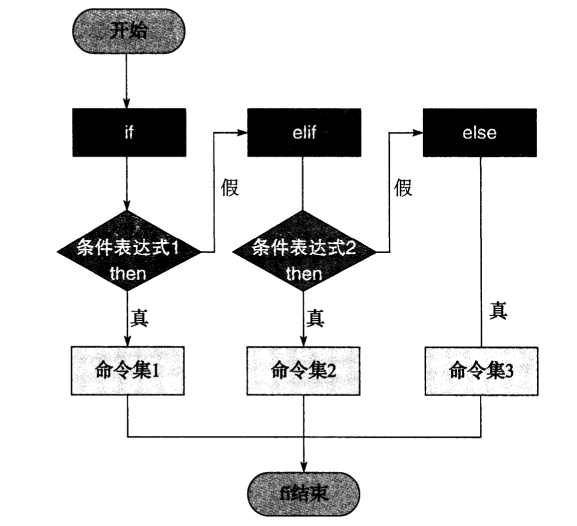
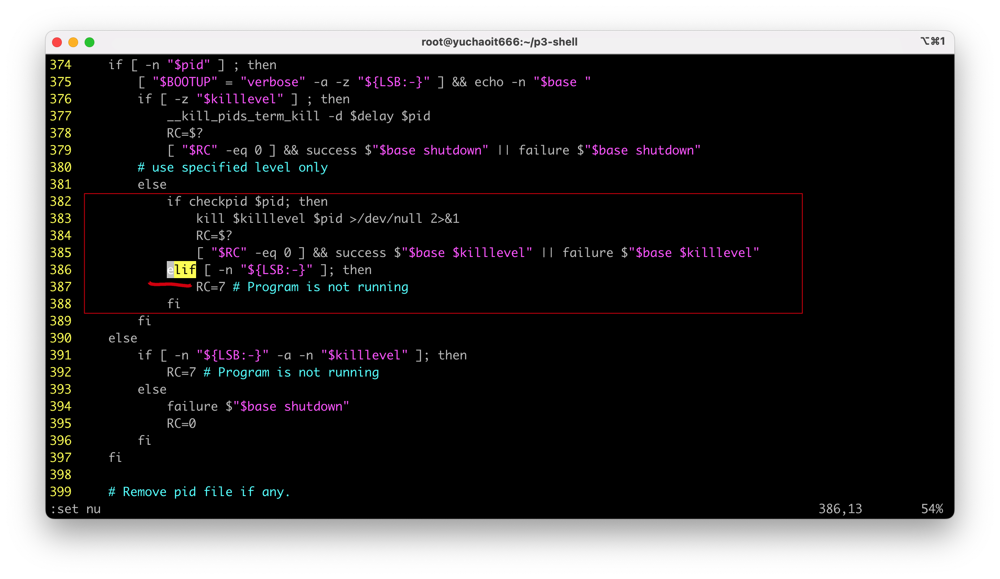
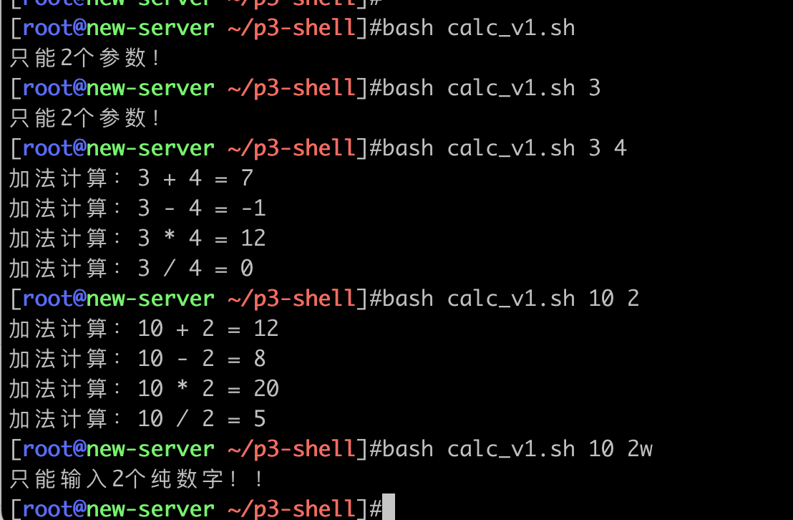
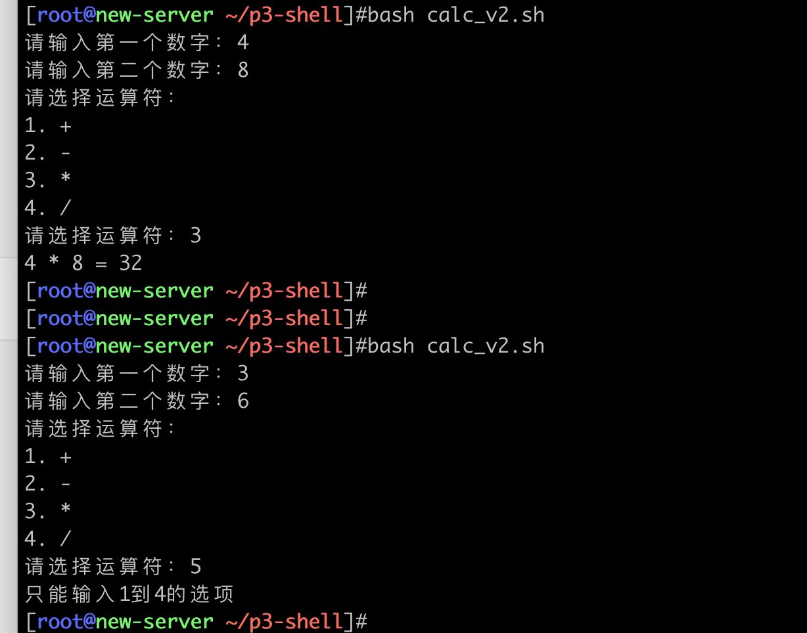
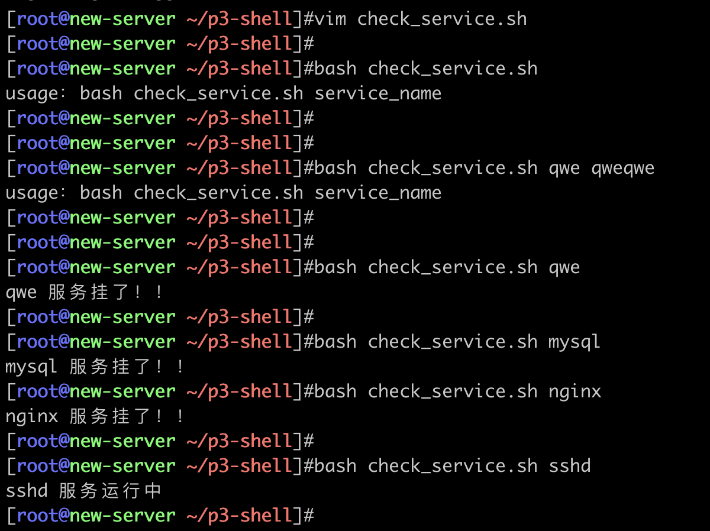

04-流程控制之if
1. 单分支if

伪代码
风格1
if [ 你有八分像吴彦祖 ];then
出门在外男孩子要保护自己
fi
风格2
if [ 你是女孩子 ]
then
男人的嘴，骗人的鬼，女孩子在外要保护好自己
fi
案例
先看系统脚本中的if玩法，作为你学习的参考写法。

给脚本传入2个参数，判断是否相等。
cat > if_1.sh <<'EOF'
#!/bin/bash
if [ "$1" -eq "$2" ];then
echo "相等"
fi
EOF
执行
[root@yuchaoit666 ~/p3-shell]#bash if_1.sh 3 4
[root@yuchaoit666 ~/p3-shell]#
[root@yuchaoit666 ~/p3-shell]#
[root@yuchaoit666 ~/p3-shell]#bash if_1.sh 3 5
[root@yuchaoit666 ~/p3-shell]#
[root@yuchaoit666 ~/p3-shell]#bash if_1.sh 55 55
相等
2.双条件分支
伪代码

if [ 帅似吴彦祖 ];then
男孩子在外要保护好自己
else
男人的嘴，骗人的鬼
fi
案例

猜大小
接收2个数字，判断数字大小关系。
cat > if_2.sh<<'EOF'
if [ $1 -eq $2 ];then
echo "相等"
else
echo "不相等"
fi
EOF
执行
[root@yuchaoit666 ~/p3-shell]#bash if_2.sh 2 43
不相等
[root@yuchaoit666 ~/p3-shell]#bash if_2.sh 2 2
相等
3.多条件分支

从这个系统脚本中，你可以可以学到，也可以省略else的关键字，但是 if 、fi是必须成对的。

伪代码
if [ 帅似吴彦祖 ];then
echo "男孩子在外要保护好自己！！"
elif [ 胖似金三胖 ];then
echo "嫌弃我胖？给我打！！"
else
echo "你是什么玩意，凭啥对我指指点点"
fi
案例
输入2个数字，判断数字关系
cat > if_3.sh <<'EOF'
if [ $1 -eq $2 ];then
echo "两数相等"
elif [ $1 -gt $2 ];then
echo "$1 大于 $2 "
else
echo "$1 小于 $2 "
fi
EOF
案例
[root@yuchaoit666 ~]#bash if_3.sh 3 4
3 小于 4
[root@yuchaoit666 ~]#bash if_3.sh 5 1
5 大于 1
[root@yuchaoit666 ~]#bash if_3.sh 5 5
两数相等
4.实战案例
4.1 完善计算器脚本
v1初代版本
要求输入2个数字，然后进行加减乘除计算。
#!/bin/bash
num1=$1
num2=$2
# 用于判断是否是两个纯数字
all_int=$(echo ${num1}${num2}|sed -r 's#[0-9]+##g')
# 限定数字个数
if [ $# -ne 2 ];then
echo "只能2个参数！"
exit
# 如果$all_int为空字符串，表示num1和num2都是纯数字
elif [ -z $all_int ];then
echo "加法计算：$num1 + $num2 = $[ $num1 + $num2 ] "
echo "减法计算：$num1 - $num2 = $[ $num1 - $num2 ] "
echo "乘法计算：$num1 * $num2 = $[ $num1 * $num2 ] "
echo "除法计算：$num1 / $num2 = $[ $num1 / $num2 ] "
else
echo "只能输入2个纯数字！！"
fi

v2条件选择版
需求如下
优化功能
1. 用read接收用户输入，更像计算器
2. 提供符号菜单选择
3. 添加if条件判断
效果如下
请输入第一个数字： 8
请输入第二个数字： 2
请选择运算符：
1. +
2. -
3. *
4. /
请输入您的选择： 1
计算结果：
8 + 2 = 10
脚本开发
#!/bin/bash
read -p "请输入第一个数字：" num1
read -p "请输入第二个数字：" num2
echo -e "请选择运算符：
1. +
2. -
3. *
4. /"
read -p "请选择运算符：" sign
# 计算器条件判断
if [ $sign == 1 ];then
echo "$num1 + $num2 = $[ $num1 + $num2 ]"
elif [ $sign == 2 ];then
echo "$num1 - $num2 = $[ $num1 - $Num2 ] "
elif [ $sign == 3 ];then
echo "$num1 * $num2 = $[ $num1 * $num2 ]"
elif [ $sign == 4 ];then
echo "$num1 / $num2 = $[ $num1 / $num2 ]"
else
echo "只能输入1到4的选项"
fi

v3异常处理版本
#!/bin/bash
read -p "请输入第一个数字：" num1
# 不是纯数字就直接结束
if [ ! -z $(echo ${num1}|sed -r 's#[0-9]+##g') ];then
echo "请输入纯数字整数！"
exit
fi
read -p "请输入第二个数字：" num2
if [ ! -z $(echo ${num2}|sed -r 's#[0-9]+##g') ];then
echo "请输入纯数字整数！"
exit
fi
echo -e "请选择运算符：
1. +
2. -
3. *
4. /"
read -p "请选择运算符：" sign
if [ ! -z $(echo ${sign}|sed -r 's#[1-4]##g') ];then
echo "只能输入加减乘除四个符号！"
exit
fi
# 计算器条件判断
if [ $sign == 1 ];then
echo "$num1 + $num2 = $[ $num1 + $num2 ]"
elif [ $sign == 2 ];then
echo "$num1 - $num2 = $[ $num1 - $Num2 ] "
elif [ $sign == 3 ];then
echo "$num1 * $num2 = $[ $num1 * $num2 ]"
elif [ $sign == 4 ];then
echo "$num1 / $num2 = $[ $num1 / $num2 ]"
else
echo "只能输入1到4的选项"
fi
4.2 备份数据
如果目录不存在自动创建
#!/bin/bash
if [ -e /backup/ ];then
echo "目录以存在"
else
mkdir -p "backup"
fi
如果备份文件不存在自动创建
#!/bin/bash
if [ -e /backup/ ];then
echo "目录以存在"
else
mkdir -p "/backup"
fi
if [ -f /backup/all_log.tgz];then
echo "备份数据已存在"
else
echo "备份文件中"
tar -zcvf /backup/all_log.tgz /var/log/
fi
4.3 程序运行检查脚本
写一个脚本，传递一个参数，即可检查该服务运行状态。
#!/bin/bash
# 限定只能检查一个服务
if [ $# -eq 1 ];then
# 检查服务运行状态
systemctl status $1 &>/dev/null
# 通过命令结果判断
if [ $? -eq 0 ];then
echo "$1 服务运行中"
else
echo "$1 服务挂了！！"
fi
# 否则提示用户正确参数用法
else
# 提示用户正确语法
echo "usage：bash $0 service_name"
# 程序退出
exit
fi

4.4 资源使用率监控脚本
开发思路
1.想清楚监控哪些资源，如何用命令提取，是什么命令
2.如何提取百分比的数据
3. 如何将提取出的数据，和阈值比较，判定超过85%就该报警了
4.结果写入到文件
提示
一是通过linux命令获取
二是提取/proc目录提供的资源数据
这里仅是为了练习思考如何通过shell的条件判断语句，以及通过linux命令拿到数据
学会、看懂语法即可。
具体如何采集精确的值，还得有更多的思考。
#!/bin/bash
# 获取当前时间，精准统计
now=$(date +%F-%T)
# 提取内存使用率 free -m
# 具体写法，内存统计
mem_used=$(free -m | awk '/Mem/{used=$3/$2;print used*100}'|sed -r 's#\..*##g')
if [ $mem_used -ge 3 ];then
echo "${USER}:${now}:内存使用率 $mem_used " > /tmp/mem_used.log
fi
# 根目录磁盘使用率
# 先统计出现有的使用率，超过85%之后，报警
disk_used=$(df -h |grep '/$' | awk '{print $5}' |sed 's#%##g')
# 条件判断
if [ $disk_used -ge 3 ];then
echo "${USER}:${now}:磁盘使用率 ${disk_used} 请尽快修复。" >> /tmp/disk_used.log
fi
# cpu使用率
# 通过top命令 查看cpu整体情况，查看%Cpus行的信息，查看idle行，表示当前有多少百分比的空闲cpu。
cpu_used=$(top -n 1|awk -F '[, %]+' 'NR==3 {print 100-$12}'|sed -r 's#\..*##g')
if [ $cpu_used -ge 3 ];then
echo "${USER}:${now}:cpu使用率 ${cpu_used} 请尽快修复。" >> /tmp/cpu_used.log
fi
4.5 判断用户输入是否为空
#!/bin/bash
read -p "随便输入点啥：" word
if [ -z $word ];then
echo "内容为空！！"
else
echo "您输入的内容为空：" ${word}
fi
4.6 成绩查询
需求：
让用户输入自己的成绩
1. 分数在0 ~ 59 不及格，需要补考
2. 分数在 60 ~ 85 属于良好
3. 分数在86 ~ 100 属于优秀
初代版本
#!/bin/bash
read -p "请输入你的成绩：" score
if [ $score -ge 0 ] && [ $score -le 59 ];then
echo "平时少玩点游戏兄弟，回去等通知吧，建议多看看于超老师的课程 www.yuchaoit.cn"
elif [ $score -ge 59 ] && [ $score -le 85 ];then
echo "考得不错，下次继续努力"
elif [ $score -ge 86 ] && [ $score -le 100 ];then
echo "大佬，带带弟弟"
else
echo "分数只能在0~100。。。别瞎整！！"
exit
fi
优化版本
思考这个脚本存在的缺陷
1. 用户输入了多个参数？或者没有参数？是不是要对参数做异常处理？
2. 用户就是不太正常，输入的是非数字，要不要异常处理？
3. 用户啥也不输入？
改进的v2版本
#!/bin/bash
if [ $# != 0 ];then
echo "本脚本无须传入参数！！"
exit
else
read -p "请输入你的成绩：" score
if [ -z $score ];then
echo "大哥，你好歹输入点东西吧！！滚粗！"
exit
fi
# 成绩数字判断，如果能替换为空字符串，证明就是纯数字，输入正确
all_int=$(echo "$score"|sed -r 's#[0-9]+##g')
# 非空字符串的话，就表示非纯数字
if [ -n "$all_int" ];then
echo "请输入纯数字！！"
exit
elif [ $score -ge 0 ] && [ $score -le 59 ];then
echo "平时少玩点游戏兄弟，回去等通知吧，建议多看看于超老师的课程 www.yuchaoit.cn"
elif [ $score -ge 59 ] && [ $score -le 85 ];then
echo "考得不错，下次继续努力"
elif [ $score -ge 86 ] && [ $score -le 100 ];then
echo "大佬，带带弟弟"
else
echo "分数只能在0~100。。。别瞎整！！"
exit
fi
fi
还有很多bug需要优化，还有v3 v4 v5..版本，软件开发就是如此的迭代，不断修复bug。
4.7 系统服务管理脚本
#!/bin/bash
source /etc/init.d/functions
read -p "请输入你要查询的服务名：" services_name
# 查询结果记录
rpm -qa $services_name > /tmp/status_install.log
# -s 限制文件存在且有内容才为true
if [ ! -s /tmp/status_install.log ];then
echo "$services_name 该服务未安装！！"
exit
fi
# 否则该服务就是存在的
echo -e "请选择执行的步骤：\n1.start\n2.stop\n3.restart\n4.status"
read -p "请输入你的选择序号：" num
if [ $num -eq 1 ];then
systemctl start $services_name > /dev/null 2>&1
# 异常处理
[ $? -eq 0 ] && action "$services_name 启动成功" /bin/true || action "$services_name 启动失败" /bin/false
elif [ $num -eq 2 ];then
systemctl stop $services_name > /dev/null 2>&1
[ $? -eq 0 ] && action "$services_name 停止成功" /bin/true || action "$services_name 停止失败" /bin/false
elif [ $num -eq 3 ];then
systemctl restart $services_name > /dev/null 2>&1
[ $? -eq 0 ] && action "$services_name 重启成功" /bin/true || action "$services_name 重启失败" /bin/false
elif [ $num -eq 4 ];then
systemctl status $services_name
[ $? -eq 0 ] && action "$services_name 服务正常运行中" /bin/true || action "$services_name 服务未运行" /bin/false
else
echo "请输入正确选项！！1 ~ 4"
fi
5.今日作业
前言，所有脚本务必手敲，别复制粘贴，只有手敲，你才会踩一堆坑，单词敲错了，语法忘了，你才能成长！！！
1.完成上述所有脚本练习
2.自主开发脚本，要求如下
1. 猜数字
2. 根据选择安装不同的软件，可选【search，info，update、remove、install】
3. 系统优化脚本
- 根据用户选择，选择对应的yum源【阿里源，清华源】
- 关闭防火墙、selinux
- 时间同步写入定时任务
- 安装常用基础软件
- 修改主机名和IP地址